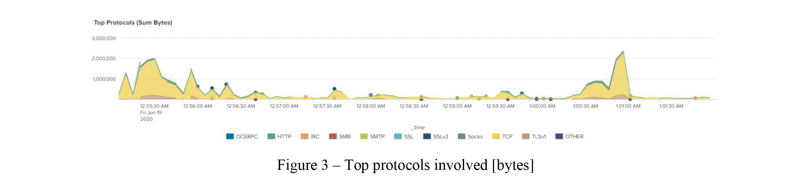
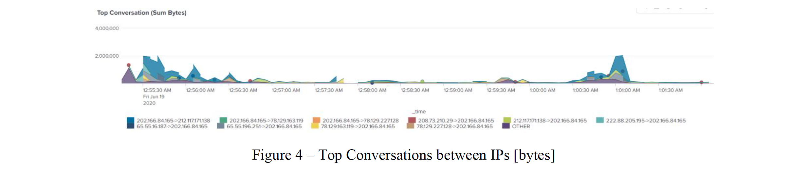
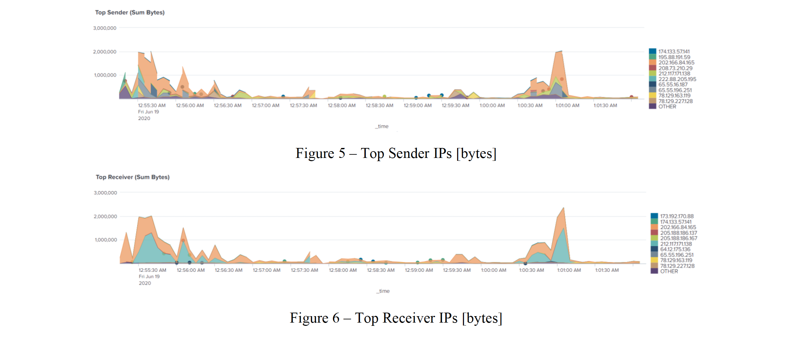
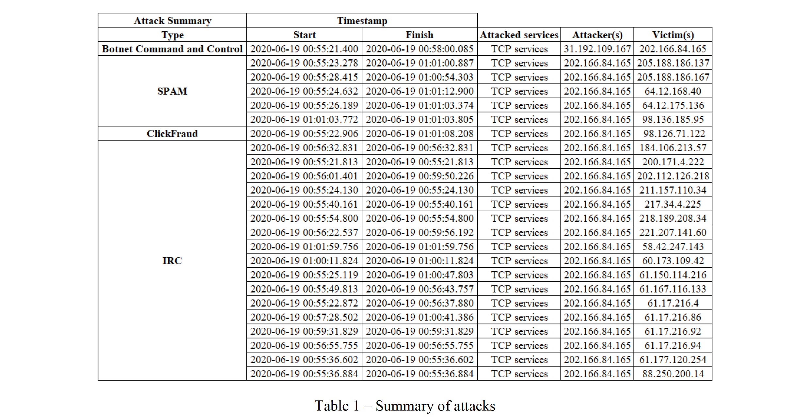
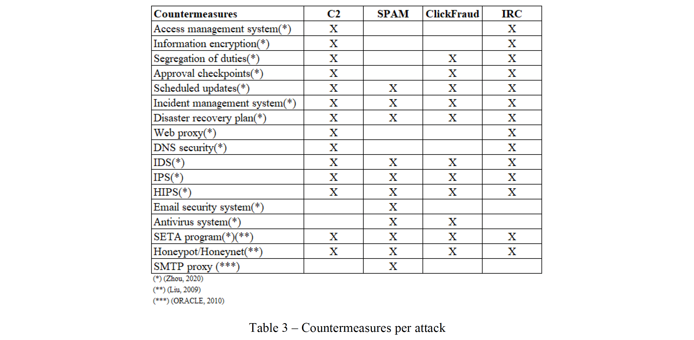

Detecting cyberattacks in network traffic data
In this Project, we were given network traffic data and used Splunk to identify cyberattacks by leveraging the analytics capabilities of this software. The aim was to strengthen our skills in analyzing traffic patterns and identifying their changes over time, which might be signs of suspicious activities. In searching the evidences of cyberattacks, and hunting the attack sources and targets, we developed the practical security incident investigation skills and mindset of a real-world Cyber Security Analyst. In addition, we skilled-up ourselves in tracing attacks back in time to create an attack narrative. Then generating and extracting significant patterns/features of detected attacks paved the way for the next project that is heavily machine learning focused. Lastly, we developed our skills as a Cyber Defender by proposing the countermeasures to detect/mitigate similar attacks in the future.
A full version of our report can be found here: Report.
Firstly, We performed an exploratory analysis on the data by using basic features of Splunk and graphical views. The dashboard function of PCAP Analyzer was used to provide a summary of the data. Figure 3 showed that there might be a pattern of attack for the period between 00:55:30 AM – 00:56:30 AM and the period between 1:00:30 AM – 1:01:30 AM. The protocols with the most traffic for those periods correspond to HTTP, IRC, SMTP and TCP protocols, for which peaks of 2 [GB] of traffic were found.
Moreover, Figure 4 shows that the host 202.166.84.165 was involved in several conversations with other addresses in the same periods of time as above.
It can be observed in Figure 5 and Figure 6 that 202.166.84.165 appeared as both top sender and top receiver, following the same pattern as stated above for the same periods of time.
Table 1 provides a summary of the attacks related to our analysis. All events share the same date AEST Jun-19 2020. As expected, the machine with IP 202.165.84.165 was involved in al four attacks detected. A full version of Splunk statements, evidence, field extractions and attack narratives can be found in our full version report.
In terms of consequences, once the attacker establishes a Command and Control channel, they will be able to access the targeted system remotely, which might affect the confidentiality of data, as this attack can be launched for espionage. Moreover, the attacker might manipulate the data at their will, violating the integrity principle, and they might also turn the victim’s system down affecting the availability. The spam attack can be related to impacts on availability in two ways. Firstly, the attacker might bring down the resources of the targeted server with a massive amount of spam email, which might saturate the bandwidth of the network. Click Fraud attack might have an impact on the integrity of the web content shown in the victim’s browser system once the malware is installed. Moreover, other perpetrators might use this attack to raise the costs of competitor’s ads, for which they fill the ads with clicks, which might impact availability of the system.
Finally, the following countermeasures were proposed to prevent the attacks in the future.
